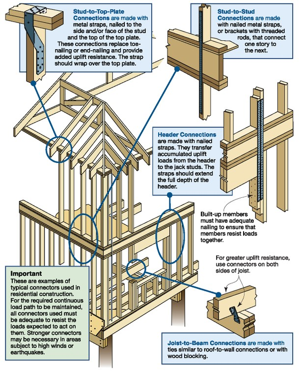
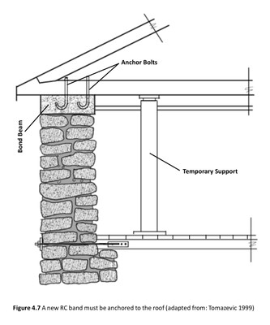

Roof tie-down present [RTDP]
There are connections that provide vertical attachment of roof to walls in order to restrain roof from wind lift-off.

A diagram showing roof-wall tie-down connections for resisting wind loads (FEMA P-804, 2010)

An example of a retrofit bond beam with roof tie-down anchor bolts ("J" bolts) (Improving Seismic Performance of Stone Masonry Buildings, Bothara and Brzev, EERI, 2011).